115 年國中教育會考社會試題與答案
這一頁是民國 115 年國中教育會考社會的整份歷屆試題，共 54 題，題目與標準答案出自心測中心 會考歷屆試題（依著作權法 §9，考試試題不受著作權保護），其中 54 題附有詳解。以下逐題列出題幹、選項與答案；要計時作答或記錄成績，請用線上練習。
線上作答這一科 →
全部 54 題
第 1 題
農業部統計，受發生於2024年7月下旬的某次災害影響，全臺農業損失估計高達33億元，其中以雲林縣、臺南市、嘉義縣的損失尤為慘重，三個行政區農損合計超過全臺農損的一半。根據上述災害發生時間及受影響地區判斷，此災害最可能為下列何者？
- （A）颱風帶來的豪大雨淹沒農田
- （B）強勁東北季風吹襲造成水稻倒伏
- （C）梅雨季節的連續降雨造成果樹浸水
- （D）強勁西南風越過山脈形成熱風使作物枯黃
答案：（A）
詳解與考點
正解：題幹鎖定2024年7月下旬及雲林縣、臺南市、嘉義縣農損嚴重；夏季西南部遭颱風帶來豪大雨，最可能造成農田淹沒，故A為正解。
B：強勁東北季風主要在秋冬盛行，時間與7月下旬不符，錯誤。
C：梅雨季主要在5至6月，與題幹災害時間不符，錯誤。
D：越過山脈形成的熱風主要影響東部地區，與西南部雲林、臺南、嘉義的受災分布不符，錯誤。
本題考點：臺灣天然災害的季節判讀——7月下旬優先聯想到颱風與豪大雨；區域判準——西南部農損嚴重須與颱風降雨的影響相互對照。
第 2 題
日本於2019年4月起，擴大從越南、菲律賓、印尼、泰國、柬埔寨、中國、緬甸、尼泊爾和蒙古招募外籍移工，以補充其看護、餐飲和建築等行業嚴重短缺的勞動力。下列何者因同樣面臨勞動力短缺及外籍移工來源國高度重疊的關係，而受上述政策執行的衝擊最大？
- （A）印度
- （B）美國
- （C）德國
- （D）臺灣
答案：（D）
詳解與考點
正解：題幹強調日本招募越南、菲律賓、印尼、泰國等外籍移工，並問哪一地同樣缺工且來源國高度重疊；臺灣也常自越南、菲律賓、印尼等地招募移工，因此會與日本直接競爭人力，故D為正解。
A：印度雖有勞動人口跨國移動，但與題幹所列日本主要招募來源國的重疊程度較低，錯誤。
B：美國的外籍勞動力來源與規模較多元，與題幹來源國的直接競爭較不明顯，錯誤。
C：德國雖面臨勞動力不足，但其外籍勞動力來源組成與題幹所列國家不如臺灣重疊，錯誤。
本題考點：國際勞動力競爭——目的地若同時缺工且招募來源國重疊，便會競爭同一批移工；判讀關鍵——不能只看是否為已開發國家，須比對移工來源地。
第 3 題
圖(一)是某座農場的衛星影像及其農產品部分生產過程的介紹。根據圖中資訊判斷，該農場的農業活動最可能具有下列何種特色？
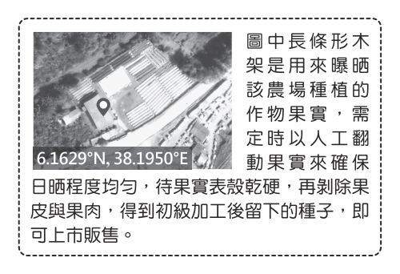
- （A）作物多樣化的集約農業
- （B）單一作物的自給性農業
- （C）勞力密集的商業性農業
- （D）大規模機械化的粗放農業
答案：（C）
詳解與考點
正解：生產過程需人工逐一翻動曝曬、剝除果皮果肉、取種子加工，且產品供販售，顯示投入大量勞力並以市場銷售為目的。C 的勞力密集商業性農業最符合，故選 C。
A：題示重點是單一農產品的加工流程，不能判為作物多樣化。
B：產品經加工後販售，目的在市場交易，非自給性農業。
D：流程仰賴人工處理，不是大規模機械化；投入大量勞力也不屬粗放農業。它看起來對，是因為衛星影像可能呈現較大農地，但農業特色仍要連同生產過程判讀。
本題考點：農業類型——勞力密集農業以大量人工投入為特徵；商業性農業以供市場販售為目的；判讀時要同時看作業方式與產品去向。
第 4 題
某一平埔族族群居住在雪山山脈與中央山脈之間的平原地區，他們利用竹筏穿梭於溪流與海岸間，進行漁獵及採集活動。依據上述判斷，該平埔族族群的生活空間最可能位於現今哪一行政區？
- （A）宜蘭縣
- （B）苗栗縣
- （C）屏東縣
- （D）臺東縣
答案：（A）
詳解與考點
正解：雪山山脈與中央山脈之間的平原是宜蘭平原，當地噶瑪蘭族利用溪流與海岸活動、使用竹筏漁獵採集的描述也相符，故 A 正確。
B：苗栗縣不在雪山山脈與中央山脈之間的宜蘭平原，地理位置不符。
C：屏東縣位於臺灣南部，不是題幹所指兩山脈之間的平原。
D：臺東縣雖有山脈夾峙的地形，但臺東縱谷位於海岸山脈與中央山脈之間，不含雪山山脈，錯誤。它看起來對，是因為同樣有平原與山脈，仍須核對題幹指定的山脈名稱。
本題考點：臺灣地形定位——雪山山脈與中央山脈之間為宜蘭平原；平埔族分布——噶瑪蘭族的生活空間在宜蘭平原；區位判讀——不可只憑山脈夾峙，須比對山脈名稱與行政區。
第 5 題
圖(二)為2019年世界多數國家都市化程度與該國人均國民所得的統計圖，圖中以此兩種統計值的世界平均值為基準，劃分成甲、乙、丙、丁四個區塊。根據各洲經濟及都市發展特色判斷，歐洲西半部的國家最可能位於圖中哪一區塊？
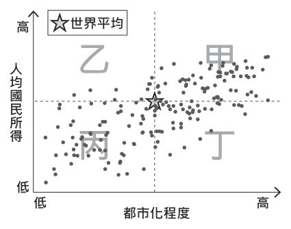
- （A）甲
- （B）乙
- （C）丙
- （D）丁
答案：（A）
詳解與考點
正解：圖中以世界平均分區，歐洲西半部國家工業化早、都市化程度高且人均國民所得高，應落在高都市化、高所得的甲區，故 A 正確。
B：乙區的所得與都市化組合不符合西歐國家普遍同時偏高的特徵。
C：丙區呈現都市化與人均所得都偏低，與西歐經濟發達的條件不符。
D：丁區雖有其中一項指標偏高，卻不是西歐常見的高都市化、高所得組合。
本題考點：都市化與所得關係——國家工業化與經濟發展常伴隨較高都市化及人均所得；區塊判讀——先依兩軸的世界平均線判定高低，再把區域特徵放入相應區塊。
第 6 題
羅馬帝國時期的作家普魯塔克在書中提到，西元前八世紀的某政權曾有「殺嬰」習俗，將不夠健壯的嬰兒放在山上等死。然而部分研究指出當時先天有缺陷的人仍受到照顧，所謂的「棄嬰山」可能只是處決罪犯之處，且文獻上也提到該政權曾選出身體有缺陷的國王。普魯塔克的說法，可能是基於當時人們熟知該政權過於重視軍事教育，所產生的錯誤印象。上述政權最可能是下列何者？
- （A）埃及
- （B）蘇美
- （C）巴比倫
- （D）斯巴達
答案：（D）
詳解與考點
正解：題幹的「西元前八世紀」、「過於重視軍事教育」與「殺嬰」傳說共同指向希臘城邦斯巴達；雖然題幹也提示普魯塔克的說法可能是錯誤印象，但政權仍最可能是斯巴達，D 為正解。
A：埃及為尼羅河流域古文明，沒有以斯巴達式軍事教育聞名，錯誤。
B：蘇美屬兩河流域早期文明，與題幹的希臘城邦軍事教育特徵不合，錯誤。
C：巴比倫亦屬兩河流域文明，並非以斯巴達式軍事教育著稱，錯誤。
本題考點：希臘城邦史——斯巴達以重視軍事教育聞名；史料批判——史料記載須考量作者觀點與後世研究，傳說不能不加判斷地視為事實。
第 7 題
圖(三)是一幅漫畫，其內容最可能與下列何者有關？
- （A）戈巴契夫的經濟改革成效有限
- （B）二次大戰結束後歐洲百廢待舉
- （C）徵稅問題導致波士頓茶葉事件
- （D）美國股市崩盤引發經濟大恐慌
答案：（D）
詳解與考點
正解：漫畫標示1931年，並呈現民眾把錢存入銀行卻因銀行倒閉受害，關鍵是1929年美國股市崩盤後的銀行擠兌與倒閉潮。D「美國股市崩盤引發經濟大恐慌」能解釋此現象，故為正解。
A：戈巴契夫的經濟改革在1980年代末，年代不符。
B：二次大戰結束後的歐洲重建始於1945年後，與1931年不符。
C：波士頓茶葉事件發生於1773年，起因是徵稅問題，與銀行倒閉無關。
本題考點：經濟大恐慌——看到1929年後、1931年與銀行倒閉等線索，連結美國股市崩盤造成的金融危機；漫畫判讀——將圖中的人物遭遇與年代一併對照歷史事件。
第 8 題
「不安的情緒逐漸發酵，社會上出現『牙刷主義』一說：權貴們將資產轉至外國，並取得外國居留權，萬一局勢惡化，只要帶牙刷就能遠走高飛。政府為因應民心浮動、《中美共同防禦條約》不久後失效等危機，再次端出數年前『莊敬自強，處變不驚』口號，發起愛國捐獻、青年從軍報國，電臺日夜播放〈龍的傳人〉等愛國歌曲。」上述內容最可能與下列何者有關？
- （A）美國在韓戰後協防臺灣海峽
- （B）美國宣布將與中華民國斷交
- （C）國共內戰使政府敗退至臺灣
- （D）臺灣受到同盟國軍機的空襲
答案：（B）
詳解與考點
正解：題幹的《中美共同防禦條約》即將失效、民眾擔心局勢惡化與〈龍的傳人〉等線索，指向1978至1979年美國宣布與中華民國斷交前後的社會氛圍。B符合，故為正解。
A：韓戰後美國協防臺灣海峽在1950年代，尚未出現題幹所述條約失效與斷交危機。
C：國共內戰使政府敗退至臺灣是1949年，年代不符。
D：同盟國軍機空襲臺灣是二次大戰期間，與中美斷交危機無關。
本題考點：臺灣現代史——《中美共同防禦條約》終止與1979年斷交相互連動；時序判讀——看到牙刷主義、愛國捐獻與〈龍的傳人〉，以1978至1979年的外交危機定位。
第 9 題
十七世紀中期，臺灣某地區原住民因能說西班牙語，且多人曾受洗為天主教徒，所以被荷蘭聯合東印度公司認為是「具西班牙人特質」的族群。上述族群最可能分布在圖(四)甲、乙、丙、丁哪一區域？
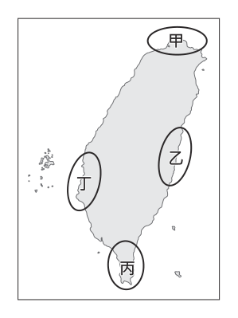
- （A）甲
- （B）乙
- （C）丙
- （D）丁
答案：（A）
詳解與考點
正解：題幹的十七世紀中期、西班牙語與天主教徒，是西班牙統治北臺灣、傳教的線索。西班牙於1626至1642年據有基隆、淡水一帶，當地原住民可能學習西班牙語並受洗；圖中甲位於北部，故 A 為正解。
B：乙位於東部，並非西班牙在北臺灣傳教與統治的核心區。
C：丙位於南端恆春一帶，與西班牙的北臺灣活動範圍不符。
D：丁位於西部沿海，非西班牙在基隆、淡水一帶的主要影響區。它看起來對，是因為荷蘭也在臺灣活動，但荷蘭主要經營南部，不能取代西班牙北臺灣的線索。
本題考點：西班牙在臺統治——1626至1642年主要據有北臺灣的基隆、淡水一帶並傳教；區域判讀——看到西班牙語與天主教，應優先定位北部。
第 10 題
家住屏東的小萱在觀賞日本動畫時，發現劇中主角的考卷上每一道試題都畫上「」，但卻是拿到零分，與自己考卷全被畫上「」時拿到滿分是不一樣的情況。查詢資料後，小萱才知道在日本畫「」與畫「」代表的都是有錯誤，而把答案畫上「」才是代表答對的意思。上述內容最適合用來說明下列哪一現象？
- （A）各國移民的習俗多元並存
- （B）社會制度隨著時間而變動
- （C）不同文化間存在些許差異
- （D）文化交流後產生位階高低
答案：（C）
詳解與考點
正解：題幹比較日本與臺灣對批改符號的不同約定，重點是批改符號因文化背景不同而具有不同意義，反映不同文化間存在些許差異，故 C 為正解。
A：各國移民的習俗多元並存，強調不同習俗共存於同一社會；題幹只是比較兩地文化的符號意義，未談移民或共存。
B：社會制度隨時間而變動，須有前後時期的變化；題幹沒有時間變遷。
D：文化交流後產生位階高低，須出現交流及優劣評價；題幹僅呈現意義不同，未比較高低。
本題考點：文化差異——同一事物可因文化背景而具有不同意義；概念辨析——只呈現差異時，不能延伸為移民共存、制度變遷或文化位階。
第 11 題
圖(五)是新奇科技購物網站更新前的網頁資訊，某日該網頁內容調整後，幾分鐘內商品突然銷售一空，甚至還多了數百筆的訂單等候補貨。下列何者最可能是造成上述情況的原因？
- （A）供貨量變更為19臺
- （B）供貨量變更為999臺
- （C）售價變更為9,999元
- （D）售價變更為20,999元
答案：（C）
詳解與考點
正解：題幹的「幾分鐘內商品售罄」且「數百筆訂單等候補貨」表示需求量突然增加；售價由19,999元降為9,999元，接近半價，最能依需求法則解釋需求量暴增，故C為正解。
A：供貨量變更為19臺只改變可供出售的數量，不能直接造成消費者需求量暴增，錯誤。
B：供貨量變更為999臺增加供給，反而不符合商品迅速售罄且大量候補的情況，錯誤。
D：售價變更為20,999元是漲價，依需求法則會使需求量減少，不會造成搶購，錯誤。
本題考點：需求法則——其他條件不變時，價格下降會使需求量增加，價格上升會使需求量減少；需求與供給區分——售價變動可影響需求量，供貨量變動則是供給面的改變。
第 12 題
臭蟲又稱床蝨，因常躲在床墊中而得名，人類被叮咬後皮膚會紅腫且奇癢無比。臭蟲會隨人群移動而擴散，例如：2023年法國爆發臭蟲危機，因觀光客、商務旅客及國際移工的遷移，使得臭蟲經由藏在行李中，蔓延至許多國家。上述內容最主要在探討下列何項議題？
- （A）國際移工引入帶來的文化衝突
- （B）區域糾紛擴大引發的民生困境
- （C）高度工業化與氣候變遷的關係
- （D）經濟全球化對人類生活的影響
答案：（D）
詳解與考點
正解：題幹重點是觀光客、商務旅客與國際移工跨國移動，使臭蟲藏在行李中擴散到多國；這是人員流動加速下影響生活的現象，屬經濟全球化的影響，故D為正解。
A：題幹未提及不同文化間的衝突，不能由外籍移工出現就推論文化衝突，錯誤。
B：題幹沒有區域糾紛或戰爭的資訊，錯誤。
C：題幹未提及工業化或氣候變遷，臭蟲擴散的直接原因是跨國人員移動，錯誤。
本題考點：經濟全球化——觀光、商務與勞動力的跨國流動增加；全球化影響判讀——題幹若強調人員或物品跨境流動及其副作用，應連結全球化，而非無據推論其他議題。
第 13 題
表(一)為二位我國某縣縣民的部分資料，根據我國法律規定判斷，關於此二位縣民的敘述，下列何者正確？
表(一)| 姓名 | 陳小花 | 吳阿杰 |
|---|
| 年齡 | 25 歲 | 28 歲 |
| 設籍時間 | 7 個月 | 5 個月 |
| 現況 | 受監護宣告 | 被宣告褫奪公權 |
- （A）皆具備完全行為能力
- （B）皆曾受到刑事處罰判決
- （C）皆無法參選該縣公職人員
- （D）皆不具備該縣縣長投票資格
答案：（C）
詳解與考點
正解：題幹要比較受監護宣告與被褫奪公權的法律效果；兩者皆不具被選舉權，因此皆無法參選該縣公職人員，故 C 為正解。
A：受監護宣告者為無行為能力人，不能說兩人皆具完全行為能力。
B：監護宣告是民事身分能力制度，不是刑事處罰判決，不能說兩人皆曾受刑事處罰。
D：褫奪公權不當然剝奪投票權，故不能說兩人皆不具縣長投票資格。它看起來對，是因為被選舉權與投票權都屬政治權利，但法律效果並不相同。
本題考點：監護宣告與公民權利——受監護宣告者不具完全行為能力；被選舉權與投票權須分別判斷；看到「皆」時，必須確認敘述能同時適用於兩人的法律地位。
第 14 題
小蔓一歲時親生父母離婚，之後與母親同住。四歲時，母親與阿德再婚，小蔓和他們兩人一起組成現在的家庭。若阿德婚後未曾進行任何法律程序改變家中成員關係，僅根據上述內容判斷，小蔓與阿德間的親屬關係應為下列何者？
- （A）姻親
- （B）配偶
- （C）旁系血親
- （D）直系血親
答案：（A）
詳解與考點
正解：題幹明示阿德只與小蔓的母親再婚，且未進行任何法律程序改變成員關係；小蔓是配偶的子女，與阿德間屬姻親。故 A 正確。
B：配偶關係只存在於婚姻當事人之間，小蔓不是阿德的配偶。
C：旁系血親須有共同祖先而非直系關係；題幹未顯示阿德與小蔓有血緣。
D：直系血親須基於出生或收養等法律關係；若阿德辦理收養才可能成立，題幹明示未辦理。它看起來對，是因為繼親家庭有親子共同生活，但共同生活不會自動變成血親。
本題考點：親屬關係分類——血親以出生或收養為基礎，配偶以婚姻為基礎；姻親判準——配偶的血親，或血親的配偶，屬姻親。
第 15 題
一處坐落於海拔2,430公尺山脊上的古城遺跡，是美洲三大古文明代表性的建築之一，其建築精妙之處是將打磨過的方形石塊疊砌起來，且在沒有使用砂漿的情況下使其能如拼圖般緊密結合。此外，建築中的梯形門窗和向內微傾斜的牆面等，皆可降低建築物在地震中倒塌的可能性。上述古城遺跡最可能位於圖(六)中何處？
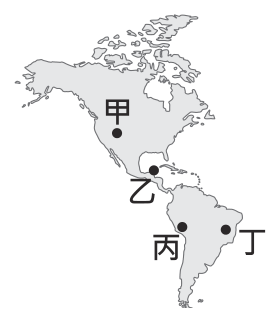
- （A）甲
- （B）乙
- （C）丙
- （D）丁
答案：（C）
詳解與考點
正解：海拔2,430公尺山脊、無砂漿的緊密石砌、梯形門窗與向內傾斜牆面，都是印加文明馬丘比丘的特徵；馬丘比丘位於南美洲西側安地斯山區，圖中位置為丙，故C為正解。
A：甲位於北美洲，並非印加文明的安地斯高山遺址所在地，錯誤。
B：乙位於中美洲，較對應馬雅或阿茲特克文明活動區，不是馬丘比丘所在地，錯誤。
D：丁位於南美洲東側巴西一帶，遠離安地斯山脈，錯誤。
本題考點：美洲古文明——印加文明以馬丘比丘為代表；遺址辨識——高山石砌、梯形門窗與防震設計指向印加；空間定位——安地斯山脈在南美洲西側。
第 16 題
表(二)顯示2016至 2019年歐洲與亞洲之間，行經北極地區某條海運航線的航行次數統計。根據表中數字判斷，此種變化除了受到全球經濟持續成長所帶動的海運需求增加外，最可能還受下列何者的影響？
表(二)| 年分 | 航行次數( 次) |
|---|
| 2016 | 1,705 |
| 2017 | 1,908 |
| 2018 | 2,022 |
| 2019 | 2,694 |
- （A）海冰融化大幅增加
- （B）全球生態保育意識興起
- （C）巴拿馬運河通行費調漲
- （D）《區域全面經濟夥伴協定》生效
答案：（A）
詳解與考點
正解：表(二)顯示北極航線航行次數由2016年的1,705次，依序增至2017年的1,908次、2018年的2,022次及2019年的2,694次。除全球經濟成長帶動海運需求外，暖化造成北極海冰大幅融化、通航期延長，最能解釋航次增加，故A為正解。
B：生態保育意識興起通常會要求減少環境衝擊，不能直接解釋北極航行次數增加，錯誤。
C：巴拿馬運河位於中美洲，與歐亞間北極航道是否通行沒有直接關係，錯誤。
D：《區域全面經濟夥伴協定》並非2016至2019年間北極海冰融化與航次增加的直接原因，錯誤。
本題考點：表格趨勢判讀——先確認2016至2019年航次逐年增加；北極航線——海冰融化會延長通航期並提高航線可利用性；因果判準——選擇能直接改變北極航道通行條件的因素。
第 17 題
報導指出：「在俄烏戰爭爆發之前的3年裡，歐盟成員國平均每月從俄羅斯進口約1,520萬噸原油和石油產品，到了2023年3月，該值已下降至140萬噸。歐盟預計2027年切斷從俄羅斯的化石燃料進口，擺脫對其能源依賴。」下列何項措施無助於達成上述目標？
- （A）制定公共場所更嚴格的暖氣供應標準
- （B）促使石油輸出國家組織維持減產政策
- （C）與其他第三國簽署天然氣的進口協議
- （D）積極發展綠能以增加替代性能源產量
答案：（B）
詳解與考點
正解：題幹目標是減少歐盟對俄羅斯化石燃料的依賴；促使石油輸出國家組織維持減產，主要影響全球石油供給與油價，不能直接減少歐盟自俄羅斯進口能源，故B為無助於達成目標的措施。
A：提高公共場所暖氣供應標準可節約能源，因而降低能源進口需求，有助於減少依賴，錯誤。
C：與其他第三國簽署天然氣進口協議可分散供應來源，有助於降低對俄依賴，錯誤。
D：積極發展綠能可增加替代性能源產量，減少化石燃料進口需求，有助於達成目標，錯誤。
本題考點：能源依賴——降低對單一來源國依賴，可從節能、供應來源多元化與替代能源著手；政策目標判讀——措施須能直接減少自俄羅斯進口或降低化石燃料需求，單純影響全球油價不足以達標。
第 18 題
中國黃河是世界上含沙量最高的河流，但2024年1月，有遊客在陝西壺口瀑布拍攝到「清流飛瀑」的壯觀景象，其實早在2020年就曾有報導指出，壺口的黃河河水變清了。事實上「黃河清」很罕見，歷史上的記載只有43次。黃河於2024年1月出現上述景象，最可能與下列何者關係較為密切？
- （A）瀑布上游流經黃土高原，支流帶入大量泥沙
- （B）瀑布上游實施造林固沙政策，減少泥沙流入
- （C）瀑布下游恰逢雨季，大量降水使得流量增加
- （D）瀑布下游興築壩堤，以壩堤攔阻泥沙變良田
答案：（B）
詳解與考點
正解：黃河含沙量高的主因在上游黃土高原泥沙流入；若上游實施造林固沙政策，能固定土壤、減少泥沙進入河川，便可解釋壺口瀑布出現「清流飛瀑」，故B為正解。
A：上游支流帶入大量泥沙會使河水更混濁，與「黃河清」的現象相反，錯誤。
C：題目所述現象與瀑布上游來沙量有關；下游是否逢雨季不能直接減少壺口上游的泥沙，錯誤。
D：下游興築壩堤的位置在壺口瀑布下游，無法作為壺口上游河水變清的直接原因，錯誤。
本題考點：水土保持——造林固沙能減少土壤侵蝕與泥沙流入河川；河川上、下游判讀——解釋某地水質時，優先檢視其上游的來水與來沙條件。
第 19 題
圖(七)摘錄自中國歷史上某一組織的文件，根據內容判斷，此組織最可能為下列何者？
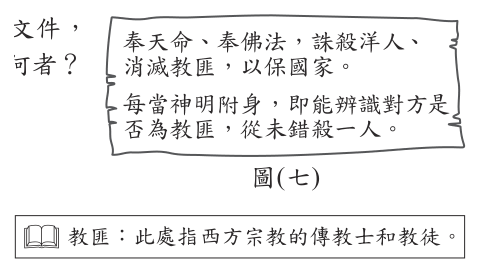
- （A）義和團
- （B）同盟會
- （C）滿洲國
- （D）中國共產黨
答案：（A）
詳解與考點
正解：文件若主張奉天命、奉佛法誅殺洋人與教匪，並相信神明附身，正符合義和團「扶清滅洋」、排斥洋教及降神附體、刀槍不入的特徵，故A為正解。
B：同盟會主張推翻清廷，與義和團扶清、排外的立場不同，錯誤。
C：滿洲國是日本扶植的政權，不是以降神附體、滅洋教為主張的民間組織，錯誤。
D：中國共產黨以階級革命為主要思想，與文件所述扶清滅洋、神明附身不符，錯誤。
本題考點：義和團運動——以「扶清滅洋」為核心口號，反洋人、反洋教；史料判讀——將文件的宗教語言、排外對象與政治立場合併辨識組織。
第 20 題
表(三)是中國歷史上三則與生活相關的資料：表(三) 資料一西元七世紀時，從中亞引進的馬匹最受歡迎，其高大、速度快，深受貴族和皇室喜愛。資料二西元七世紀，羊肉的消費量大為提高。八世紀上半葉，隴右 ( 今甘肅 ) 飼養的羊隻，成長了二倍多。資料三西元八世紀中期，貴族婦女騎馬出門，戴胡帽並展露出妝容。上述資料最可能與下列何者有關？
表(三)| 資料一 | 西元七世紀時，從中亞引進的馬匹最受歡迎，其高大、速度快，深 受貴族和皇室喜愛。 |
|---|
| 資料二 | 西元七世紀，羊肉的消費量大為提高。八世紀上半葉，隴右( 今甘肅) 飼養的羊隻，成長了二倍多。 |
| 資料三 | 西元八世紀中期，貴族婦女騎馬出門，戴胡帽並展露出妝容。 |
- （A）商周到秦漢的族群交流
- （B）魏晉到隋唐的民族互動
- （C）宋朝到元朝的國際交流
- （D）明清時期東亞世界的變遷
答案：（B）
詳解與考點
正解：表(三)三則資料都明示西元7至8世紀，並呈現中亞馬匹、羊肉與胡帽等胡風；這是魏晉以來民族互動延續至隋唐、胡漢交融達於鼎盛的現象，故B為正解。
A：商周至秦漢的年代早於表中西元7至8世紀，不符，錯誤。
C：宋朝至元朝的年代晚於表中隋唐時期，不符，錯誤。
D：明清時期同樣晚於表中西元7至8世紀，不符，錯誤。
本題考點：隋唐民族互動——中亞馬匹、羊肉消費與胡帽等胡風，反映胡漢交融；年代判準——西元7至8世紀對應隋唐，先用時間排除不符選項。
第 21 題
圖(八)為臺灣某一官方資料中，所收錄當時四種公務人員制服樣式圖。根據內容判斷，此官方資料最可能是下列何者？
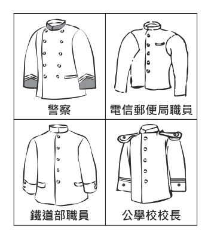
- （A）《臺灣府志》
- （B）《熱蘭遮城日誌》
- （C）《中華民國行政院公報》
- （D）《臺灣總督府公文類纂》
答案：（D）
詳解與考點
正解：圖中制服標注「電信郵便局職員」與「公學校校長」；「郵便」「公學校」都是日治時期用語，故收錄該官方資料者最可能是《臺灣總督府公文類纂》，D為正解。
A：《臺灣府志》是清代方志，年代早於日治時期，錯誤。
B：《熱蘭遮城日誌》屬荷治時期資料，不會出現日治的郵便局與公學校職稱，錯誤。
C：《中華民國行政院公報》為戰後中華民國官方資料，與日治用語不符，錯誤。
本題考點：臺灣史料斷代——「郵便」「公學校」可作為日治時期的語詞線索；檔案判讀——先由職稱與用語辨識時代，再選擇相應的官方資料。
第 22 題
十九世紀晚期美國政府取得一處亞洲殖民地，曾陷入要延續先前的殖民體系，或允許該地獨立的兩難。美國總統決定延續殖民體系，結合當時流行的學說，發表一段談話：「美國必須以現代教育和基督教文化，教化欠缺能力的殖民地人民，提升其素質。靠著神的恩典，盡我們所能做到最好。」上述談話，最能體現下列何者？
- （A）因信得救
- （B）天賦人權
- （C）社會達爾文主義
- （D）極權政治的興起
答案：（C）
詳解與考點
正解：談話以「現代教育和基督教文化」教化被認為欠缺能力的殖民地人民，將強者支配弱者合理化；這是把適者生存觀念套用到國族與殖民關係的社會達爾文主義，故C為正解。
A：因信得救是基督教教義，重點在信仰與救贖，不能解釋以優劣階序合理化殖民的思想，錯誤。
B：天賦人權強調人的平等權利，與殖民者自居優越、教化他者的邏輯矛盾，錯誤。它看起來對，是因為談話提到基督教文化，但題幹真正考的是殖民統治背後的優劣觀。
D：極權政治是20世紀的政治現象，不是19世紀晚期用來正當化殖民擴張的流行學說，錯誤。
本題考點：社會達爾文主義——將適者生存錯置套用於人類社會與國族競爭；帝國主義——以強者教化弱者的說法正當化殖民統治；概念判準——遇到優劣階序與殖民合理化，優先辨識社會達爾文主義。
第 23 題
甲國面臨勞動力不足的窘境，因此該國政府研擬放寬外國籍人士申請永久居留的條件，並開放配偶、親屬可一同移入長期居留，希望提高外國籍勞工居住在該國提供勞動力的意願。藉由上述政策而取得在甲國永久居留資格者，與甲國國民在權利義務的異同，若從我國法律規定的角度分析，下列何項敘述最適當？
- （A）皆具有參與公民投票的資格
- （B）皆具有發表時事評論的自由
- （C）皆具有擔任民意代表的機會
- （D）皆具有接受國民教育的義務
答案：（B）
詳解與考點
正解：題幹比較取得永久居留資格者與我國國民的權利義務；發表時事評論屬言論自由，是憲法保障在臺灣之人的基本權利，不以國籍為限，故B為正解。
A：參與公民投票涉及公民政治權利，須具有中華民國國籍，外籍永久居留者不當然具有資格，錯誤。
C：擔任民意代表涉及參政權，須具有中華民國國籍，外籍永久居留者不具有同樣機會，錯誤。
D：接受國民教育是國民的義務，外籍永久居留者不負此義務，錯誤。
本題考點：基本權利與政治權利區分——言論自由保障在臺灣之人，不以國籍為限；公民資格判準——公民投票與擔任民意代表屬國民的政治參與權；義務判準——接受國民教育是國民的義務。
第 24 題
圖(九)是三位好友在通訊軟體上的聊天內容，根據三人的對話判斷其身分，下列何者最可能是圖中提及三種職權範圍內都可處理的糾紛？
- （A）甲趁乙不注意時偷拿乙的皮包
- （B）甲遭乙騎車撞倒導致手腳擦傷
- （C）甲向乙借一百萬元卻逾期不還
- （D）甲不服乙開立的交通違規罰單
答案：（B）
詳解與考點
正解：題幹中的「起訴」對應檢察官、「判決」對應法官、「委員會調解」對應鄉鎮市調解委員會。車禍造成手腳擦傷，同時可能涉及過失傷害的刑事責任與損害賠償的民事爭議，也可經調解處理，故B為正解。
A：偷拿皮包屬竊盜的刑事案件，並非調解委員會、檢察官與法官三者職權都可處理的共同範圍，錯誤。
C：借款逾期不還主要是民事債務爭議，檢察官不會就單純借款不還提起公訴，錯誤。
D：不服交通違規罰單屬行政救濟事項，不是三者共同的處理範圍，錯誤。
本題考點：司法與調解職權——檢察官負責偵查、起訴犯罪，法官負責審判，調解委員會處理可調解的民事或刑事告訴乃論紛爭；交集判準——車禍傷害可同時產生刑事與民事問題，並可進行調解。
第 25 題
「我國原本由宏都拉斯進口大量白蝦，但2023年與該國斷交後，我國恢復對該國產品課徵關稅，部分進口業者的營運遭受衝擊，進口量大幅下滑。我國官員受訪時提及，2025年將開放貝里斯的白蝦零關稅進口至我國，以增加商品供應來源。」僅根據上述內容判斷，關於此二項進口政策變化產生的各別影響，下列何項推論最合理？
- （A）受到對貝里斯政策的影響，我國市場上白蝦的售價下降
- （B）受到對貝里斯政策的影響，貝里斯的貿易出超金額下降
- （C）受到對宏都拉斯政策的影響，宏都拉斯的貿易出超金額上升
- （D）受到對宏都拉斯政策的影響，我國白蝦市場的競爭程度上升
答案：（A）
詳解與考點
正解：對貝里斯白蝦採零關稅進口，會增加我國市場的白蝦供給來源；供給增加且其他條件不變時，市場售價較可能下降，故 A 為正解。
B：零關稅可能有利貝里斯白蝦出口到我國，但題幹只提供此一品項對我國的出口變動，沒有貝里斯整體出口與進口資料，無法判定其貿易出超金額下降，錯誤。
C：恢復課徵關稅後，宏都拉斯白蝦對我國的出口量下滑，但單一品項對我國的出口變動不足以判定宏都拉斯整體貿易出超金額上升，錯誤。
D：對宏都拉斯課稅使其進口量大幅下滑，原有供應來源減少，市場競爭程度較可能降低而非上升，錯誤。
本題考點：關稅與供給——降低進口關稅可增加進口供給，供給增加時價格較可能下降；貿易判準——判斷一國貿易出超須比較整體出口與進口，不能只憑單一品項對單一國家的出口變動；市場競爭——供應來源增加會提高競爭，供應來源減少則降低競爭。
第 26 題
在公民課的分組活動中，小華與同組同學打算以短劇的方式，呈現民眾解決民事紛爭的途徑及結果。表( 四)是該組同學在討論時提出的各種情境，若小華負責編寫劇本，他應選擇下列何項組合才符合我國的法律規定？
表(四)| 途徑 | 甲 | 當事人至法院提告對方違反契約 |
|---|
| 乙 | 被害人委任律師向法院提出自訴 |
| 結果 | 丙 | 被告遭到法院判決處以罰金 |
| 丁 | 雙方在法院達成訴訟上和解 |
- （A）甲、丙
- （B）甲、丁
- （C）乙、丙
- （D）乙、丁
答案：（B）
詳解與考點
正解：題幹要從表（四）配對民事紛爭的解決途徑與結果；甲是當事人至法院提告對方違反契約，屬民事訴訟，丁是雙方在法院達成訴訟上和解，亦為民事訴訟可能結果，所以甲、丁組合的 B 正確。
A：甲雖是民事訴訟途徑，但丙的「判處罰金」是刑罰結果，不是民事紛爭的結果，錯誤。
C：乙的「自訴」是被害人就犯罪提出的刑事程序，丙的罰金也是刑罰，兩者都不屬民事紛爭途徑或結果，錯誤。
D：乙的自訴屬刑事程序，不能和民事訴訟上和解配成題目所問的民事紛爭組合，錯誤。
本題考點：民事紛爭的司法途徑——當事人可向法院提起民事訴訟；民事訴訟結果——可由法院判決，亦可成立訴訟上和解；刑事程序判準——自訴與罰金分別是犯罪追訴途徑及刑罰，不可誤列為民事結果。
第 27 題
因應國際趨勢，跨國企業近年將部分生產線從中國分散至其他國家。其中甲國2020年的人口金字塔顯示壯年人口比例近70%，且未來數十年仍占極高比例，再加上該國工資明顯低於中國，而成為跨國企業布局的主要選擇之一。依據上述資訊，甲國的人口金字塔最可能為下列何者？
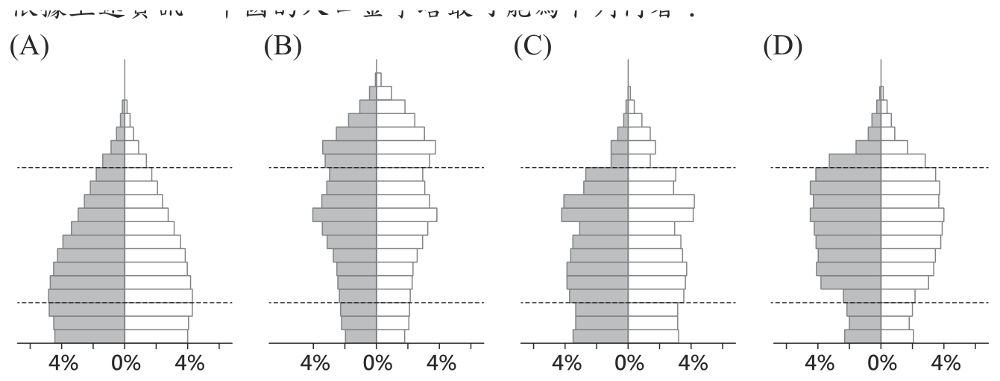
本題選項為上圖中的 A／B／C／D，請對照圖片作答。
答案：（A）
詳解與考點
正解：題幹的關鍵是壯年人口近70%，且未來數十年仍占極高比例；應選中間壯年層特別寬厚、少兒層仍有一定規模以延續勞動力的人口金字塔。圖 A 符合這些條件，故為正解。
B：圖示的老年層相對偏寬，反映高齡人口比重較高，不符合題幹強調長期壯年勞力充沛的條件。
C：圖示的少兒層過窄，後續補入勞動年齡的人口有限，難以維持未來數十年壯年人口的極高比例。
D：圖示的人口結構未呈現壯年層特別寬厚的特徵，無法對應題幹所述的主要勞動力優勢。
本題考點：人口金字塔判讀——先看各年齡層的寬窄；勞力優勢判準——壯年層寬厚代表工作年齡人口比重大，少兒層仍具規模才有後續勞動力；高齡化判準——上層偏寬時，不能直接推論為勞力充沛。
第 28 題
「2018年1月23日17時32分(臺灣時間)，於阿拉斯加南方海域發生規模8.0的地震，震央在西經149.20度，北緯56.00度。該區域的海嘯警報中心研判可能引發海嘯，經初步推算，該地震所引發的海嘯，將不會影響臺灣。」根據震央位置判斷，上述海嘯警報中心應是下列何者？
- （A）太平洋海嘯警報中心
- （B）印度洋海嘯警報中心
- （C）加勒比海海嘯警報中心
- （D）東北大西洋暨地中海及相連海域海嘯警報中心
答案：（A）
詳解與考點
正解：震央位於北緯 56.00 度、西經 149.20 度的阿拉斯加南方海域，屬太平洋區域，因此應由太平洋海嘯警報中心監測並發布預警，故 A 為正解。
B：印度洋海嘯警報中心的管轄區域是印度洋，與阿拉斯加南方海域不符。
C：加勒比海海嘯警報中心負責加勒比海周邊，與太平洋東北部不符。
D：東北大西洋暨地中海及相連海域海嘯警報中心負責大西洋與地中海相關海域，非阿拉斯加南方海域。
本題考點：經緯度定位——北緯 56 度、西經 149 度位於阿拉斯加南方的太平洋海域；國際海嘯預警——依震央所在海域判斷對應的警報中心。
第 29 題
根據學者研究，臺灣地名中的「坑」為閩南族群與客家族群通用來指稱溪谷的用字，常與「頭」、「尾」連用來辨別聚落在溪谷內的位置。例如閩南族群的地名「坑頭」，是指聚落位在溪流的上游；客家族群則是依開墾順序命名，拓墾通常由河谷下游往上游進行，最後開墾的聚落則以「坑尾」命名。下列哪一示意圖最符合上述兩族群坑頭及坑尾聚落位置的命名原則？
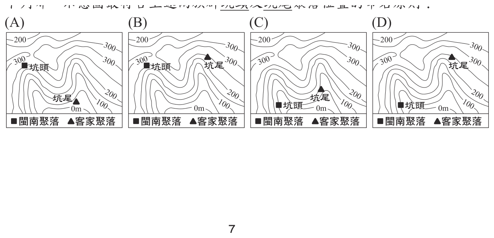
本題選項為上圖中的 A／B／C／D，請對照圖片作答。
答案：（B）
詳解與考點
正解：題幹以溪谷上下游決定地名；閩南「坑頭」指上游，客家因由下游向上游拓墾，最後開墾的「坑尾」也在上游。圖 B 將閩南坑頭與客家坑尾都標在等高線數值較高的溪谷上游，故為正解。
A：將其中一個應位於上游的地名標在接近 0 公尺的下游低處，不符合命名原則。
C：將坑頭或坑尾標在下游低處；溪谷中等高線數值較高的一端才是上游，錯誤。
D：未同時把閩南坑頭與客家坑尾置於上游高處，混淆兩族群命名雖不同、此題位置結論卻相同的條件。
本題考點：等高線與溪流判讀——溪流由等高線數值高處流向低處，上游在較高處；閩南地名判準——坑頭在溪谷上游；客家地名判準——由下游向上游拓墾，最後開墾的坑尾在上游。
第 30 題
以下為一份契約的內容：「立賣契人竹塹社一均。因本社稅賦繁重，加上能捕到的鹿變少，經過內部共同討論，願將本社管轄的貓兒錠一處草地，由漢人郭弈榮承買，時價銀二十兩。該處土地由郭弈榮開築埤圳，招募佃戶，開墾後報官取得土地權利，並且每年仍補貼竹塹社的稅賦銀二十兩。」對於上述契約內容的理解，下列何者最適當？
- （A）官府的賦稅，影響原住民土地經營方式
- （B）竹塹社原住民，當時被官府歸類為生番
- （C）漢人承買土地，是為了捕獵更多的鹿隻
- （D）竹塹社受到漢人脅迫，舉社向東部遷徙
答案：（A）
詳解與考點
正解：契約明載竹塹社「因本社稅賦繁重」而將草地售予漢人，並約定每年補貼稅賦銀二十兩；這直接說明官府賦稅影響原住民的土地經營方式，故 A 正確。
B：竹塹社能與漢人進行土地交易，通常屬官府所稱的熟番，不是生番，錯誤。它看起來對，是因為題幹涉及原住民，卻忽略熟番、生番須依與漢人社會及官府的互動判別。
C：郭弈榮購地後要開築埤圳、招募佃戶、開墾並報官取得土地權利，目的為農業開墾，不是捕鹿，錯誤。
D：契約沒有提到漢人脅迫或竹塹社舉社遷往東部，不能自行增添情節，錯誤。
本題考點：清代臺灣原住民土地契約——先以契約明文判讀交易原因與用途；賦稅影響——稅賦壓力可改變土地所有及經營；熟番判準——與漢人交易、受官府治理的平埔族群，通常不稱生番。
第 31 題
「法國國王為課徵新稅以解決財政危機，決定重新恢復自1614年以來未再召開的諮詢機關，各界為此選出1,139名代表，來到凡爾賽宮進行稅制改革。代表們帶著來自全國各階層的陳情書，其內容遠遠超出財政危機的問題。」上述「諮詢機關」，最可能是下列何者？
- （A）巴黎和會
- （B）三級會議
- （C）關稅同盟
- （D）聯合國大會
答案：（B）
詳解與考點
正解：題幹的「法國國王」、「為課徵新稅解決財政危機」與「自1614年以來未再召開」指向 1789 年召集的三級會議；各階層代表攜帶陳情書赴凡爾賽宮，也符合其背景，故 B 正確。
A：巴黎和會是第一次世界大戰後處理國際問題的會議，與法國大革命前的稅制改革無關。
C：關稅同盟是德意志統一過程中的經濟聯盟，不是法國國王召集的諮詢機關。
D：聯合國大會是第二次世界大戰後的國際組織，年代與性質都不符。
本題考點：法國大革命背景——路易十六為財政與課稅問題召開三級會議；辨識判準——同時出現 1614 年後重開、凡爾賽宮與各階層陳情書，即可鎖定三級會議。
第 32 題
一位檢察官在法庭陳述意見時提到：「本次的違法事件，就是臺灣人意圖謀反，目的是從帝國手中奪取臺灣。帝國目前對臺灣的統治，實在過於優厚，而臺灣人不知感恩，竟然要求設置臺灣議會。臺灣人如果反對現行統治方針，不願做日本國民，那就離開臺灣吧。」上述「統治方針」應是下列何者？
- （A）實施軍事戒嚴
- （B）終止動員戡亂
- （C）貫徹民族自決
- （D）推行內地延長
答案：（D）
詳解與考點
正解：檢察官把臺灣視為日本帝國的一部分，要求反對統治者離開臺灣，並敵視設置臺灣議會的訴求；這符合日治時期將臺灣視為日本本土延伸、推行同化的內地延長方針，故 D 正確。
A：軍事戒嚴是中華民國時期的統治措施，不能解釋日本帝國統治下的臺灣議會請願情境。
B：終止動員戡亂是中華民國政府的政策用語，年代不符。
C：民族自決主張民族自行決定政治地位，與檢察官否定臺灣人政治訴求的殖民立場相反。
本題考點：日治臺灣統治政策——內地延長主義把臺灣視為日本本土延伸並推行同化；情境判準——出現帝國、日本國民與反對臺灣議會等語，即應連結殖民統治方針。
第 33 題
以下是中國某時期重要人才選用方式的敘述：「脫穎而出者由皇帝親授官職，經過十餘年的歷練，就有機會執掌國政。當時人為此曾評論道：『就算是今日帶領數十萬大軍伐遼，從契丹人手中奪回燕雲十六州，其榮耀都比不上呢！』」上文「脫穎而出」的方式，最可能為下列何者？
- （A）通過科舉考試入仕
- （B）向天朝納貢受冊封
- （C）奉旨前往德國留學
- （D）依九品官人法獲評上品
答案：（A）
詳解與考點
正解：題幹提及契丹與燕雲十六州，可判定為宋代；「脫穎而出者由皇帝親授官職」且榮耀極高，正是士人透過科舉考試入仕的情形，故 A 正確。
B：向天朝納貢受冊封是藩屬國與中國王朝的外交關係，不是選用人才入仕的方法。
C：奉旨前往德國留學屬近代清末以後的留學活動，與宋代不符。
D：九品官人法是魏晉時期依品第選官的制度，早於題幹所示的宋代。
本題考點：科舉制度——以考試選拔人才並授予官職；時代判準——契丹、燕雲十六州可連結宋代；制度辨識——科舉入仕不同於魏晉九品官人法及外交冊封。
第 34 題
圖(十)是某博物館所展出的文物。根據圖中內容判斷，此文物最可能於何時何地製作？
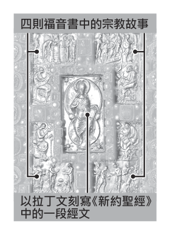
- （A）西元前六世紀的西亞地區
- （B）西元前一世紀的南歐地區
- （C）西元九世紀的西歐地區
- （D）西元十四世紀的中南美洲地區
答案：（C）
詳解與考點
正解：題幹文物以拉丁文刻寫《新約聖經》經文，並繪出四福音書的宗教故事，這些線索指向中古西歐基督教的泥金裝飾手抄福音書。此類文物盛行於中古西歐，故 C「西元九世紀的西歐地區」為正解。
A：西元前六世紀的西亞不以拉丁文書寫《新約聖經》，年代與宗教內容都不合。
B：西元前一世紀的南歐早於基督教《新約聖經》形成，更不會有四福音書手抄本。
D：西元十四世紀的中南美洲文明並非以拉丁文書寫《新約聖經》的中古歐洲基督教文化。
本題考點：中古西歐文物判讀——同時出現拉丁文、《新約聖經》與四福音書故事時，優先連結基督教手抄福音書；年代與地區判準——先由文字、宗教內容判斷文化圈，再核對其興盛年代。
第 35 題
老師在課堂上講解權力分立的概念，說明如何透過分權制衡的機制，以避免政府濫權或侵害人民的權利，這種政府體制運作的原則，廣為多數民主國家所採用。下列何者的互動關係符合上述概念？
- （A）總統任命執政黨的黨員擔任行政院院長
- （B）縣長推動觀光活動以籌措地方政府財源
- （C）行政院對於窒礙難行的法案提出覆議
- （D）民眾為表達對政策不滿上街遊行抗議
答案：（C）
詳解與考點
正解：題幹要找政府機關間以分權制衡避免濫權的互動；行政院對立法院通過且窒礙難行的法案提出覆議，是行政權制衡立法權，故 C 正確。
A：總統任命行政院院長是政府內的人事任命，題目未呈現不同權力間的制衡。
B：縣長推動觀光活動籌措財源是地方行政首長的施政，不是機關間制衡。
D：民眾遊行是人民表達意見與監督政府的方式，不是政府權力間的分立制衡。它看起來對，是因為同樣能限制政府作為，但題幹問的是政府體制內的分權機制。
本題考點：權力分立——行政、立法等權力分由不同機關行使；制衡判準——須看一個政府權力對另一個政府權力的限制，例如行政院提出覆議；人民監督雖重要，並非政府機關間制衡。
第 36 題
臺北市為維護選舉時的市容景觀和秩序，制定《臺北市競選廣告物管理自治條例》，透過地方法規限制競選廣告的設置，違規者將被處以罰鍰，並限期移除廣告。但有人認為該法規的規範不夠明確，參選者仍可以形象廣告的方式刊登廣告，以致許多民眾覺得競選廣告並沒有減少，希望相關單位能予以修正。關於上述法規的敘述，下列何者最適當？
- （A）臺北市採行正向誘因，處理競選廣告違規問題
- （B）該條例若需修正，應由立法院依照規定三讀通過
- （C）違規受罰者若不服處分，可提起訴願進行權利救濟
- （D）政府透過刑事處罰手段，預防選舉期間發生犯罪行為
答案：（C）
詳解與考點
正解：自治條例對違規競選廣告處以罰鍰，屬行政處分；受處分者若不服，得先提起訴願尋求行政救濟，故 C 正確。
A：罰鍰是以不利益促使守法的負向誘因，不是給予獎勵的正向誘因。
B：臺北市自治條例的修正應由臺北市議會依程序議決，不是由立法院三讀通過。
D：罰鍰屬行政罰，並非以刑事處罰預防犯罪，錯誤。
本題考點：地方自治法規——自治條例由地方立法機關制定或修正；行政罰判準——罰鍰是行政法上的不利益處分，不等於刑罰；行政救濟——不服行政處分時，可依法提起訴願。
第 37 題
甲團體常透過統計數據評鑑某中央政府機關的公職人員，並在社群媒體上公布報告，表(五)為其中一位公職人員的統計數據。有民眾認為這些數據僅能呈現工作量，無法看出工作品質，因此留言建議可以增列其他評鑑項目。根據上述內容判斷，增列下列哪一項目最有助於評鑑此種公職人員的表現？
表(五)| 各項會議 平均出席率 | 91.7% |
|---|
| 法律修正案 的提案件數 | 12 件 |
| 預算審查 參與率 | 80.3% |
- （A）對不當施政的糾正案件數
- （B）各類訴訟案件的審理進度
- （C）公共工程預算的編列金額
- （D）對各部會首長的質詢內容
答案：（D）
詳解與考點
正解：表（五）的 91.7% 會議出席率、12 件法律修正案提案及 80.3% 預算審查參與率，都只呈現立法委員的工作量；對各部會首長的質詢內容可檢視監督是否具體、有品質，最能補足評鑑，故 D 正確。
A：糾正不當施政是監察院的職權，不是立法委員職權。
B：各類訴訟案件的審理進度屬法院司法權的工作。
C：公共工程預算的編列是行政機關的行政工作，不能用來評鑑立法委員表現。
本題考點：立法委員職權——立法、預算審查及質詢行政機關；工作量與品質——出席率、提案件數、參與率是量化指標，質詢內容較能評估監督品質；權力分工——糾正屬監察權，審理訴訟屬司法權。
第 38 題
有環保團體推出「掃了再買」APP，民眾只要使用這個APP掃描商品條碼，就能看到商品製造商有沒有因違反環保法規遭罰的紀錄。該團體希望藉此能提供消費者更充足的資訊，幫助他們在購物時判斷是否要購買，甚至改變原先的選擇，並期許生產者為其生產行為負起責任，而優良企業也能獲得消費者肯定。關於上述環保團體推出的手機APP，下列敘述何者最適當？
- （A）有助於增加消費者的購物支出
- （B）呈現出法律變革影響科技發展
- （C）揭露各企業曾經發生的民事紛爭
- （D）藉由影響個人偏好改變消費行為
答案：（D）
詳解與考點
正解：APP 揭露製造商違反環保法規的紀錄，讓消費者依環保價值判斷是否購買，並促使生產者負責；這是藉由影響個人偏好改變消費行為，故 D 正確。
A：題幹只說可能改變購買選擇，沒有表示消費者的購物支出一定增加。
B：此例是科技工具提供法律違規資訊以影響選擇，不是法律變革影響科技發展。
C：APP 揭露的是違反環保法規遭罰的紀錄，不是企業間或個人間的民事紛爭。
本題考點：消費行為影響因素——資訊、價值觀與個人偏好會影響購買決策；責任消費判準——消費者可依企業的環境表現調整選擇，形成對生產者的市場壓力。
第 39 題
「官軍從鹿港登陸以後，很快就摧破賊巢、痛殲匪眾。只是現在『逆首』竄入內山，而內山情勢複雜，因此搜捕的工作必須加快。昨日又有官員建議，為了紀念這次事件，除了將諸羅改名嘉義外，臺灣二字也應該一併改名。我認為這就是放著修建城池、增設兵卒的正經事不管，只留心在沒用的地方，以後不許再提臺灣改名的事。」文中「逆首」最可能是下列何者？
- （A）朱一貴
- （B）林爽文
- （C）余清芳
- （D）莫那魯道
答案：（B）
詳解與考點
正解：題幹的關鍵史實是「諸羅改名嘉義」，這是清代林爽文事件後，因諸羅城民堅守有功而改名。文中又說逆首竄入內山、官軍加緊搜捕，與林爽文逃入內山的情況相符，因此B林爽文為正解。
A：朱一貴與林爽文同為清代臺灣民變領袖，容易只憑人物類型而混淆；但朱一貴事件發生於1721年，「諸羅改名嘉義」則是1787年林爽文事件後的史實，錯誤。
C：余清芳是日治時期西來庵事件的領導者，時代與清代諸羅改名不符，錯誤。
D：莫那魯道與日治時期霧社事件有關，並非清代民變人物，錯誤。
本題考點：清代臺灣民變——看到「諸羅改名嘉義」可鎖定1787年林爽文事件；史料判讀要同時核對地名變更、人物與年代，不能只憑「清代民變領袖」等寬泛分類作答。
第 40 題
某研究案根據1750至1850年代各國船隻的航海日誌，將航行軌跡繪製成圖(十一)。儘管船隻可能前往世界各地，但仍以各國殖民地或勢力範圍為主要目的地，例如圖中法國船隻，軌跡主要集中於北美和西印度群島的法國殖民地。圖中「甲」、「乙」最可能是下列何者？
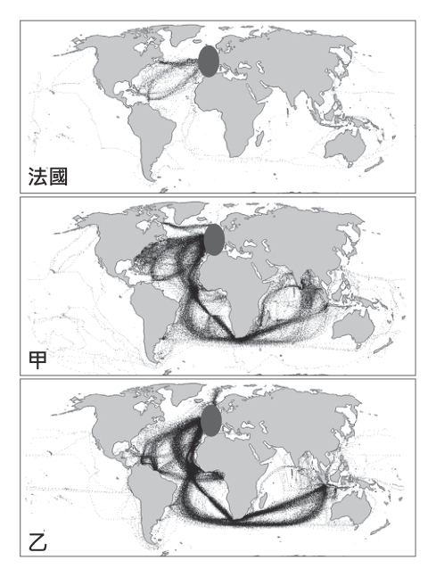
- （A）甲：英國、乙：荷蘭
- （B）甲：荷蘭、乙：西班牙
- （C）甲：葡萄牙、乙：英國
- （D）甲：西班牙、乙：葡萄牙
答案：（A）
詳解與考點
正解：題幹以殖民地或勢力範圍判讀18世紀至19世紀的航線分布；甲航線廣布北美、印度洋與印度，符合兼有北美與印度殖民地、海上勢力龐大的英國，乙航線集中繞好望角前往東印度群島（印尼），符合荷蘭東印度公司活動範圍，故 A 為正解。
B：把甲判為荷蘭、乙判為西班牙；荷蘭的重點在東印度群島，西班牙的殖民航線則以美洲為主，均不合圖示分布。
C：葡萄牙航線重點在巴西、非洲與通往亞洲的航路，不能解釋甲連往北美與印度的廣泛分布，錯誤。
D：西班牙航線重南美，葡萄牙航線重巴西、非洲與澳門等地，與甲、乙的北美、東印度分布不符。
本題考點：殖民帝國航線判讀——先由航線集中地對照殖民地與勢力範圍；英國的北美與印度、荷蘭通往東印度群島的航線是重要判準；葡萄牙與西班牙的航線重心可用來排除誘答。
第 41 題
甲國進口商小莫固定在每星期一、四，以相同乙幣價格，從乙國進口相同數量的某商品至國內販售，並在交易當天將甲幣兌換為乙幣完成付款，表(六)是他在2020 年6月8日及6月22日的受訪內容。根據表中內容判斷，下列何者最可能是該年6月時，每一甲幣兌換乙幣的匯率變化？日期受訪內容 6 月 8 日星期一就匯率來說，6 月初至今，每次花費的成本一次比一次低。 6 月 22 日星期一就匯率來說，今天所花費的成本是 6 月至今各次中最高的。
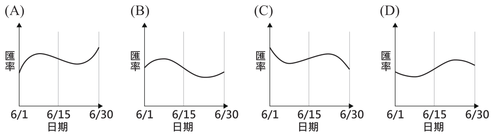
表(六)| 日期 | 受訪內容 |
|---|
| 6 月 8 日 星期一 | 就匯率來說，6 月初至今，每次花費的成本一次比一次低。 |
| 6 月 22 日 星期一 | 就匯率來說，今天所花費的成本是 6 月至今各次中最高的。 |
本題選項為上圖中的 A／B／C／D，請對照圖片作答。
答案：（B）
詳解與考點
正解：關鍵在把「成本」的漲跌換算成「匯率」的漲跌方向。小莫以固定乙幣價格進口，需付出的甲幣（成本）愈少，代表一甲幣能換到愈多乙幣，即匯率愈高；成本愈多則代表匯率愈低。6 月 8 日的說法顯示成本自月初起逐次走低，代表匯率在月初這段期間持續上升；6 月 22 日的說法則顯示當天成本是全月最高，代表匯率當天已跌到全月最低點。兩則受訪內容合起來看，該月匯率走勢須先升、再於月底前反轉下滑至最低，符合此走勢者為 B。
A、C、D：其餘三個選項所呈現的走勢圖，只要不是「先升、後於月底前跌至最低」這個型態即可排除；常見誤判是把成本與匯率的漲跌方向直接畫成同向，或忽略 6 月 22 日成本創全月新高、匯率同步降到最低這個轉折點。
本題考點：匯率與交易成本的反向關係——買方以固定對方幣別金額付款時，成本降低代表本國幣升值、成本上升代表本國幣貶值；閱讀題幹敘述須先轉換成匯率方向，再比對走勢圖，不能直接以成本高低套用匯率高低。
第 42 題
「2023年 4月15日，北非的蘇丹爆發內戰，民間武裝集團突襲機場，衝突很快就從機場延燒到首都喀土穆，現今戰事已延燒到蘇丹全境，各國也開始撤離境內的外交人員及公民。」根據圖(十二)中的資訊判斷，上述內戰爆發的影響最可能是下列何者？
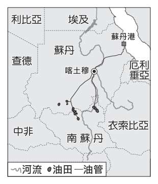
- （A）若內戰惡化，難民將會大量湧入鄰國肯亞
- （B）蘇丹港若遭封鎖，將阻斷波斯灣的石油輸出
- （C）南部橄欖園若遭破壞，將使全球橄欖油價格飆升
- （D）若喀土穆被占領且鄰近大河遭控制，將影響埃及用水
答案：（D）
詳解與考點
正解：圖示的尼羅河由南向北流，喀土穆位於河流交會的要衝；若喀土穆被占領且鄰近大河遭控制，會影響下游埃及的用水，故 D 正確。
A：肯亞不是蘇丹的鄰國，不能據此推論蘇丹難民會大量湧入肯亞。
B：蘇丹港位於紅海沿岸，遭封鎖影響的是該港航運，不會阻斷波斯灣的石油輸出。
C：當地不是全球重要橄欖產區，南部橄欖園遭破壞的推論缺乏地理依據。
本題考點：尼羅河流向——由東非高地向北流入埃及；河川上中下游影響——上游或中游的控制可能影響下游用水；區域地理判準——須先核對鄰國、港口海域與主要作物分布。
第 43 題
我國在2007年修正了《民法》中關於子女姓氏的規定，將原本子女從父姓的原則，修改為父母應以書面方式，約定子女從父姓或從母姓。表(七)是2012至 2018年關於新生兒約定從母姓的統計數據。根據表中資料判斷，對於修法後新生兒姓氏的變化，下列何種說法最合理？
表七| 年分 | 出生登記 總人數 ( 人 ) | 約定 從母姓 比例 (%) |
|---|
| 2012 | 229,760 | 1.5 |
| 2013 | 199,113 | 1.6 |
| 2014 | 210,383 | 1.8 |
| 2015 | 213,598 | 1.9 |
| 2016 | 208,440 | 2.1 |
| 2017 | 193,844 | 2.1 |
| 2018 | 181,601 | 2.3 |
- （A）新生兒約定從母姓的比例顯示性別歧視日趨嚴重
- （B）選擇新生兒姓氏時仍會受到其他社會規範的影響
- （C）法律變遷促使多數人改變新生兒姓氏的選擇結果
- （D）基於傳宗接代需求約定從母姓的新生兒多為男嬰
答案：（B）
詳解與考點
正解：表中2012-2018年新生兒約定從母姓的比例僅由1.5%升至2.3%，始終是極少數。修法已容許父母書面約定從父姓或母姓，但多數選擇仍未改變，表示姓氏選擇仍會受傳統父系觀念等其他社會規範影響，故 B 為正解。
A：從母姓比例微幅上升，不能推論性別歧視日趨嚴重，錯誤。
C：從母姓始終未達多數，不能說法律變遷促使多數人改變選擇結果，錯誤。
D：表中未區分新生兒性別，無法推出從母姓者多為男嬰，錯誤。
本題考點：社會規範與個人選擇——法律允許不等於多數人的行為立刻改變；統計資料判讀——僅能依比例與欄位作推論，未提供性別資料不可自行補充。
第 44 題
依據上文，建物設置「五腳基」的目的，最可能為下列何者？
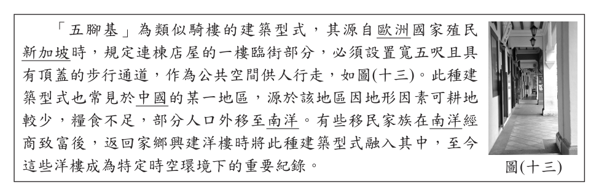
- （A）防止蚊蟲及毒蛇的侵擾
- （B）因應冬季道路積雪行走不便
- （C）躲避強風發生時產生的沙塵暴
- （D）避免溼熱氣候下強烈日晒及雨淋
答案：（D）
詳解與考點
正解：五腳基是一樓臨街、寬五呎且有頂蓋的步行通道；新加坡等地溼熱多雨，頂蓋可讓行人避免強烈日晒及雨淋，故 D 正確。
A：五腳基的主要設計是提供有遮蔽的公共步道，不是防止蚊蟲及毒蛇侵擾。
B：新加坡及華南移民地區氣候溼熱，沒有冬季道路積雪的問題。
C：此建築型式源於溼熱多雨地區，與沙塵暴環境無關。
本題考點：建築型式反映環境——建築用途須連結當地氣候；五腳基判準——有頂蓋的臨街通道用以遮陽避雨並供行人通行；溼熱氣候特徵——強日照與降雨多，非積雪或沙塵暴。
第 45 題
上文中提及的洋樓，最主要分布於下列中國的哪一地區？
- （A）西部的高山地區
- （B）北部的平原地區
- （C）東南部沿海地區
- （D）西北部綠洲地帶
答案：（C）
詳解與考點
正解：題幹以「可耕地少、人口外移至南洋」及返鄉興建融入五腳基的洋樓為線索，指向閩粵一帶的僑鄉；該區位於中國東南部沿海，故 C 為正解。
A：西部高山地區不是下南洋移民與僑匯洋樓最集中的區域。
B：北部平原地區可耕地較多，與題幹所述因可耕地少而外移的脈絡不合。
D：西北部綠洲地帶遠離東南沿海的南洋移民網絡，不符。
本題考點：僑鄉與移民——閩粵東南沿海居民常移居南洋，僑匯返鄉可影響建築樣式；區域判讀——須把地形、移民流向與文化遺存三項線索合併判斷。
第 46 題
根據圖(十四)中內容判斷，阿華廣傳訊息所達成的效果，最可能是下列何者？
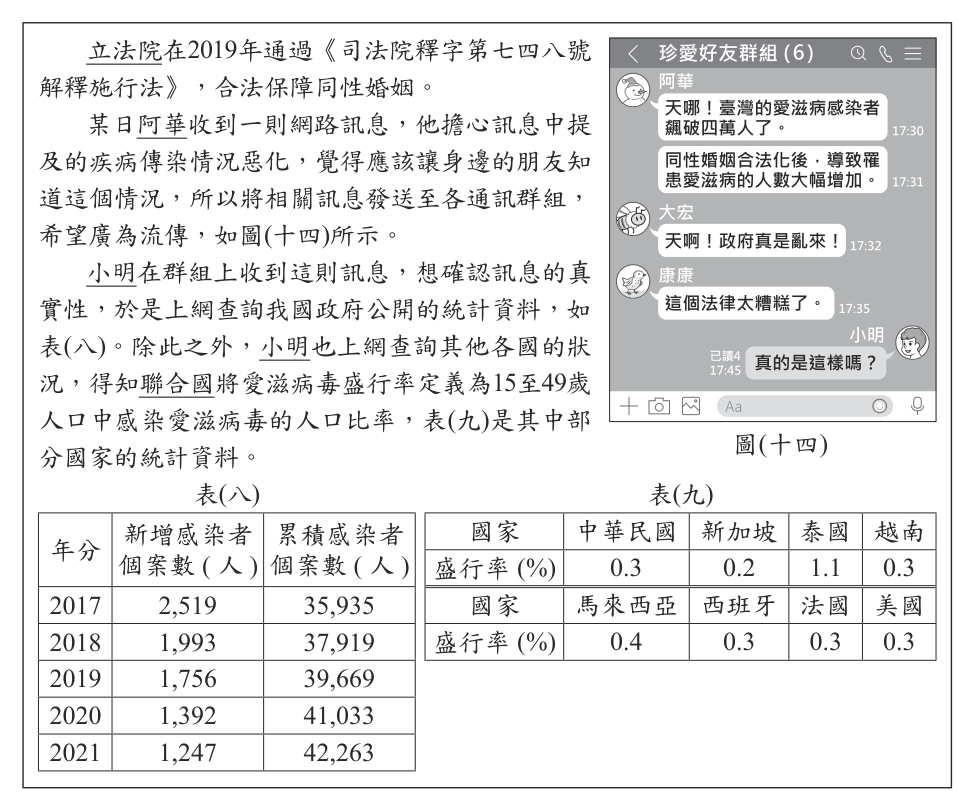
- （A）透過社群網路影響公共意見
- （B）善用大眾媒體爭取婚姻自由
- （C）利用網路科技提供醫學新知
- （D）成立民間團體推動法律變革
答案：（A）
詳解與考點
正解：阿華把訊息發送到各通訊群組，希望廣為流傳，並引起群組成員回應討論；這是透過社群網路擴散資訊、影響公共意見，故 A 正確。
B：阿華是個人透過通訊群組轉傳訊息，不是善用大眾媒體爭取婚姻自由。
C：訊息未經證實，且後文小明須查詢資料確認真偽，不能說是在提供醫學新知。
D：情境沒有成立民間團體或推動法律變革的行動，錯誤。
本題考點：社群網路與公共意見——個人可透過通訊群組快速擴散訊息並影響討論；媒介判準——個人轉傳不同於大眾媒體報導，也不同於組織倡議或立法行動。
第 47 題
根據表(八)與表(九)的資訊判斷，關於圖(十四)中阿華所傳遞的訊息，下列何項解讀最適當？
- （A）內容符合事實，因我國通過修法之後導致累積感染者人數增加
- （B）內容符合事實，因我國的愛滋病毒盛行率比東南亞鄰近國家高
- （C）內容與事實不符，因我國統計數據顯示新增感染者人數逐年減少
- （D）內容與事實不符，因我國的愛滋病毒盛行率比歐、美先進國家低
答案：（C）
詳解與考點
正解：判斷訊息真偽應看表（八）的新增感染者趨勢；數字依序為 2,519 人、1,993 人、1,756 人、1,392 人、1,247 人，逐年減少，與訊息宣稱修法後疾病傳染惡化的說法相反，所以內容與事實不符，C 正確。
A：累積感染者由 35,935 人、37,919 人、39,669 人、41,033 人到 42,263 人增加，是既有個案逐年累加的結果，不能據此推論由修法導致增加。它看起來對，是因為累積數確實上升，卻把累積總量誤當成當年新增趨勢。
B：表（九）中我國盛行率為 0.3%，新加坡為 0.3%、泰國為 0.2%、越南為 0.3%、馬來西亞為 0.4%，不能說我國比東南亞鄰近國家都高，且也非檢核訊息的關鍵。
D：我國 0.3% 的盛行率雖與西班牙、法國、美國同為 0.3%，仍不能用與歐美比較來判斷訊息所稱修法後新增感染是否惡化。
本題考點：統計資料判讀——判斷變化要比較同一指標的時間趨勢；新增與累積判準——新增個案反映各期變化，累積個案會隨既有數值加總而增加；訊息查證——結論必須由相關數據支持，不可只挑選看似支持的數字。
第 48 題
根據文中小明檢視網路訊息的過程判斷，顯示下列何者的重要性？
- （A）對於跨越國界傳播的疾病，世界各國應共同合作防堵疫情
- （B）對於各種媒體傳播的資訊，閱聽大眾應具備媒體識讀能力
- （C）對於行政機關推動的政策，政府施政應秉持性別平等立場
- （D）對於網路串流平臺的作品，使用者應避免侵害智慧財產權
答案：（B）
詳解與考點
正解：小明收到網路轉傳訊息後不盲信，而是查詢政府公開統計資料及其他國家的資料，藉此檢視真偽；這顯示閱聽大眾應具備媒體識讀能力，故 B 正確。
A：跨國合作防堵疫情雖有其重要性，但小明的行動重點是查證訊息，不是國際防疫合作。
C：題幹提到同性婚姻與網路訊息，但小明檢視的是疾病傳染說法，沒有在討論行政機關的性別平等施政。
D：情境不是使用網路串流平臺作品，也沒有智慧財產權侵害問題。
本題考點：媒體識讀——接收媒體資訊時應主動查證來源與數據；閱聽人判準——不轉傳未核實內容，並比較可靠資料後再判斷真偽；情境對應——答案須回應題幹中的查證行動，不可只選同樣重要但無直接關聯的議題。
第 49 題
上文中所述最適合製糖的作物，其主要生長環境最可能為下列何者？

- （A）年雨量小於500mm
- （B）最冷月均溫10°C以下
- （C）海拔1,000公尺以上的山坡地
- （D）南緯25度到北緯25度之間的地區
答案：（D）
詳解與考點
正解：題幹所述最適合製糖的作物是甘蔗。甘蔗屬高溫多雨的熱帶作物，主要分布在南北回歸線附近，也就是約南緯 25 度到北緯 25 度之間，故 D 為正解。
A：年雨量小於 500 mm 的環境過於乾燥，甘蔗需要較充足水分，不合。
B：最冷月均溫 10°C 以下偏低溫，甘蔗不耐低溫，錯誤。
C：甘蔗多種植於平原，非以海拔 1,000 公尺以上山坡地為主要生長環境。
本題考點：作物生長環境——甘蔗適合高溫、雨量較充足的熱帶與副熱帶地區；緯度判讀——南北回歸線間日照與氣溫較高，利於熱帶作物生長。
第 50 題
上文廠歌歌詞的創作背景及圖(十六)描繪的情景，與下列臺灣哪一產業發展階段的特色最相符？
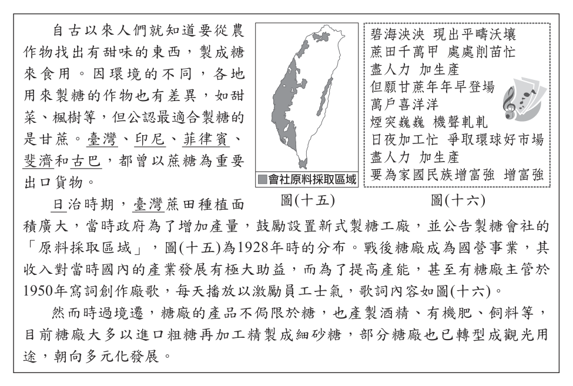
- （A）外銷食品加工產品扶植國內輕工業
- （B）設立加工出口區吸引大量外商投資
- （C）因應石油危機推動交通、能源等基礎建設
- （D）持續推動農業轉型升級並發展高科技產業
答案：（A）
詳解與考點
正解：廠歌創作於 1950 年，強調糖業加工增產並「爭取環球好市場」；戰後初期以農產品加工外銷賺取外匯、進而扶植國內輕工業，最符合 A 的產業發展階段。
B：設立加工出口區吸引外商投資是 1960 年代以後的發展，晚於 1950 年廠歌所呈現的背景。
C：因應石油危機推動交通、能源等基礎建設，屬 1970 年代十大建設相關脈絡，年代不符。
D：農業轉型升級及發展高科技產業是較晚期的發展方向，不能對應 1950 年代以糖業外銷為主的情景。
本題考點：戰後臺灣產業發展——1950 年代以農產加工外銷賺取外匯並扶植輕工業；年代判準——加工出口區在 1960 年代後、十大建設在 1970 年代、高科技產業更晚，須與題幹年份比對。
第 51 題
上文提及糖廠的多元化發展，其最主要的目的為下列何者？
- （A）降低生產的運輸成本
- （B）減少粗糖的關稅成本
- （C）提高產業的附加價值
- （D）增加甘蔗的種植面積
答案：（C）
詳解與考點
正解：題幹提到糖廠除製糖外，也產製酒精、有機肥、飼料，並轉型為觀光用途；關鍵是把原有資源延伸為更多產品與服務。這能增加產品用途與收益來源，提高產業附加價值，C 為正解。
A：多元化發展不必然改變原料或產品的運輸距離，不能推出主要目的在降低運輸成本。
B：進口粗糖再加工是原料來源的描述，題幹未指出多元化是為減少關稅成本。
D：糖廠轉型為多元產品與觀光用途，並不等於增加甘蔗種植面積；它看起來對，是把糖業發展誤限縮為擴種甘蔗。
本題考點：產業多元化——由單一產品擴展到相關產品、服務或觀光等用途；附加價值——判斷措施是否讓同樣資源產生更多用途、收益或市場，而非只看產量與面積。
第 52 題
上述中國商人家族所經營的事業，最可能為下列何者？
- （A）調查戶口作為掌握稅收依據
- （B）投資鐵路興築與煤鐵礦開採
- （C）承辦國營企業，推行大躍進
- （D）設置市舶司，造船往來西洋
答案：（B）
詳解與考點
正解：題幹指這些中國商人家族配合官方自強運動；自強運動著重興辦近代工業，如鐵路、煤礦與鋼鐵，因此投資鐵路興築與煤鐵礦開採的 B 最符合。
A：調查戶口以掌握稅收是政府行政措施，不是商人配合自強運動經營的近代企業。
C：大躍進是 1950 年代以後中華人民共和國的政策，與晚清自強運動年代不符。
D：市舶司是宋、明等時期管理海外貿易的官署，不是近代商人興辦的產業。
本題考點：自強運動——晚清推動近代軍事與工業建設；事業類型判準——鐵路、煤礦、鋼鐵等近代產業最能對應自強運動；時代辨識——大躍進與市舶司分屬不同時期，不可混淆。
第 53 題
文中「航空公路建設獎券」的發行，最可能與下列何者有關？
- （A）改革開放在沿海設經濟特區
- （B）北伐結束後十年建設的展開
- （C）庚子後新政推動的改革項目
- （D）因應能源危機推行十大建設
答案：（B）
詳解與考點
正解：題幹的關鍵年代是1933至1937年，對應國民政府北伐完成後推動航空、公路、鐵路等現代化建設的十年建設。B「北伐結束後十年建設的展開」符合這段黃金十年的時空背景，故為正解。
A：改革開放與沿海經濟特區是1978年後中國的政策，年代不符。
C：庚子後新政是清末推動的改革，早於題幹的1933至1937年。
D：十大建設是1970年代臺灣因應能源危機推行的建設，地點與年代都不符。
本題考點：國民政府十年建設——看到1933至1937年、航空與公路建設等線索，連結北伐完成後的黃金十年；年代比對——先以題幹年代定位，再排除清末、1970年代臺灣與1978年後中國的政策。
第 54 題
上文中國人得以自由使用租界內體育場館，最可能與下列何者有關？
- （A）甲午戰爭結束，中國對日本割地賠款
- （B）一次大戰爆發，日本占領德國租借地
- （C）日俄戰爭結束，日本驅逐俄羅斯勢力
- （D）太平洋戰爭爆發，日本向同盟國宣戰
答案：（D）
詳解與考點
正解：題幹指出1941年後上海租界受日本控制，並開放中國人使用場館，關鍵在太平洋戰爭爆發後日本接管英美在上海的租界。D「太平洋戰爭爆發，日本向同盟國宣戰」發生於1941年12月，符合題意，故為正解。
A：甲午戰爭結束於1895年，與1941年的租界易主無關。
B：一次大戰於1914年爆發，日本占領德國租借地，但尚非題幹所述日本控制英美租界的情境。
C：日俄戰爭結束於1905年，年代過早。
本題考點：太平洋戰爭與上海租界——看到1941年、日本控制租界，應連結太平洋戰爭爆發後日本向英美等同盟國宣戰；歷史事件判讀——以題幹的年代與租界控制者兩項條件共同核對。
其他年度
回到國中教育會考社會的年度總覽，
或到國中教育會考題庫首頁看其他科目。
題目與標準答案出自心測中心 會考歷屆試題（依著作權法 §9，考試試題不受著作權保護）。依中華民國《著作權法》第 9 條第 1 項第 5 款，
依法令舉行之各類考試試題不得為著作權之標的，得自由利用。詳解為 AI 整理的學習輔助，
並非官方標準答案；中華民國會修訂，引用前請對照現行版本查證。